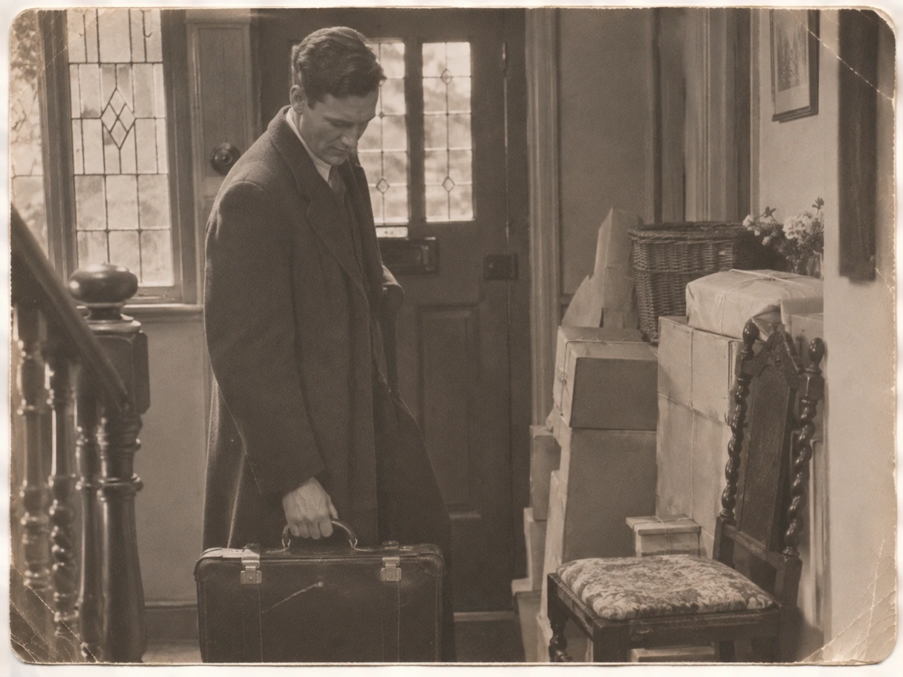
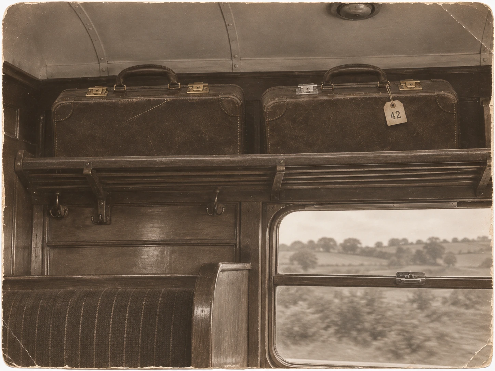
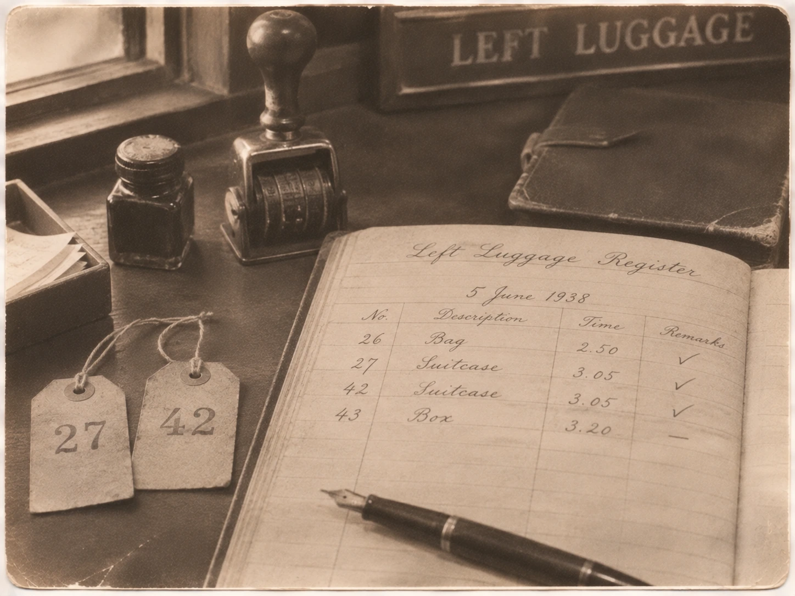

남겨진 기록의 두 번째 묶음


PHOTOGRAPHS
남겨진 사진들
사진을 눌러 개별 기록과 사물을 조사하세요.
CORRESPONDENCE
두 통의 편지
사진과 편지를 서로 비교하여 글씨를 복원하세요.
관찰한 단서 0개복원 0 / 8
CHRONOLOGY
사진의 순서
일곱 장을 시간순으로 옮기세요. 화살표나 드래그로 이동할 수 있습니다.
OBJECT RECORD
사물 기록장
원래 주인과 가방이 바뀐 동안의 당시 소지자를 각각 기록하세요.
복원된 기록

JUNE 1938
1938년 6월
기록을 아직 모두 복원하지 않았습니다.
01 / 04
CHAPTER I